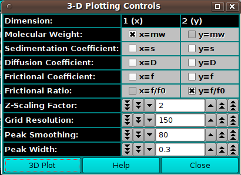
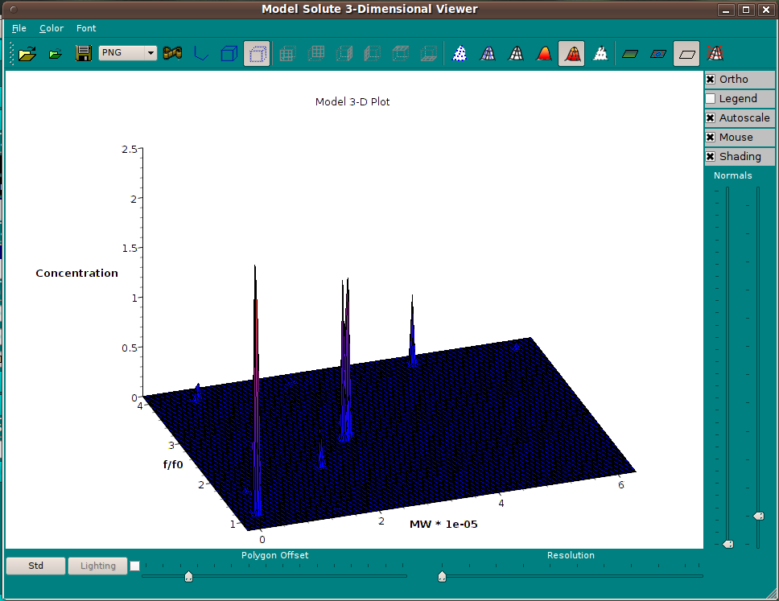
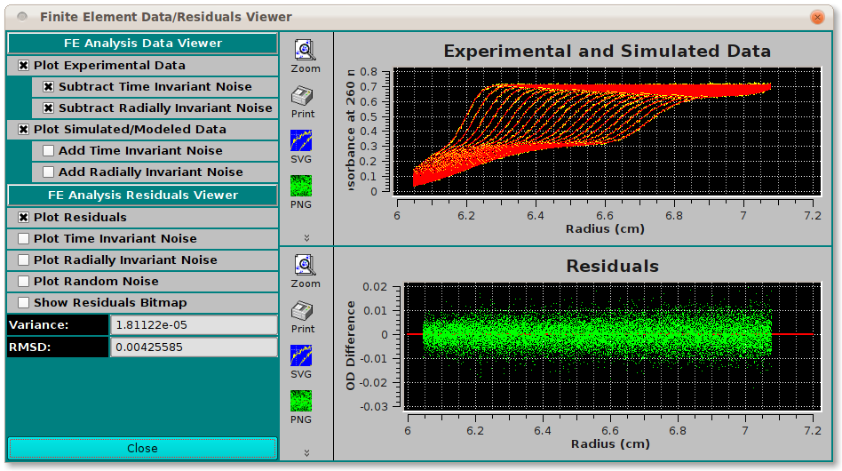

Manual
Manual
Manual
Manual
Upon completion of FE Match simulation, a pair of enhanced plot controls dialogs appears. The "3D Plot" button in the first of these launches a 3-dimensional plot window whose primary control resides in this dialog. There are size, orientation, and other controls that are in the 3D dialog itself. A second dialog displays a set of data and residuals plots that are more refined and controllable than those in the main FE Match window.

Below is a 3D plot window sample. As mentioned, it is controlled largely in the Controls dialog. In the 3D window itself, the toolbar controls have tool tip text shown when the cursor hovers over each. The mouse scroll wheel controls zoom. Left mouse button click and hold and mouse movement, as well as arrow keys, control orientation. In general, display control is easily learned in playing with the mouse and keyboard, sometimes in combination with shift, alt or control keys.

The image below is a Residuals plot dialog sample. The check boxes that control plot contents are self-explanatory. It appears automatically upon simulation completion and may be brought up any time using the Residual Plot button in the main window.
